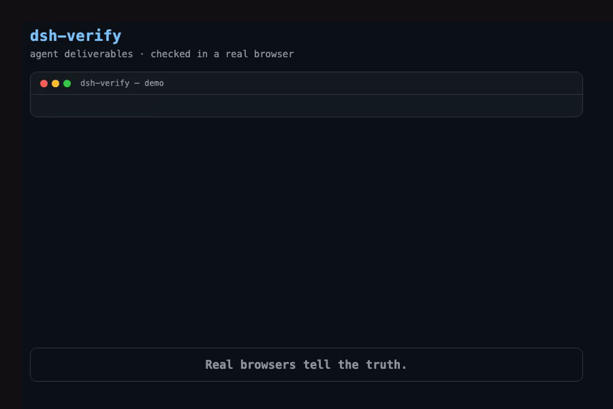
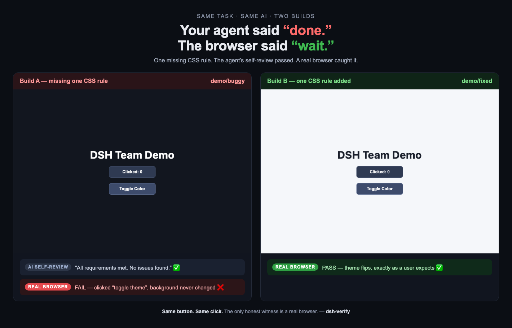
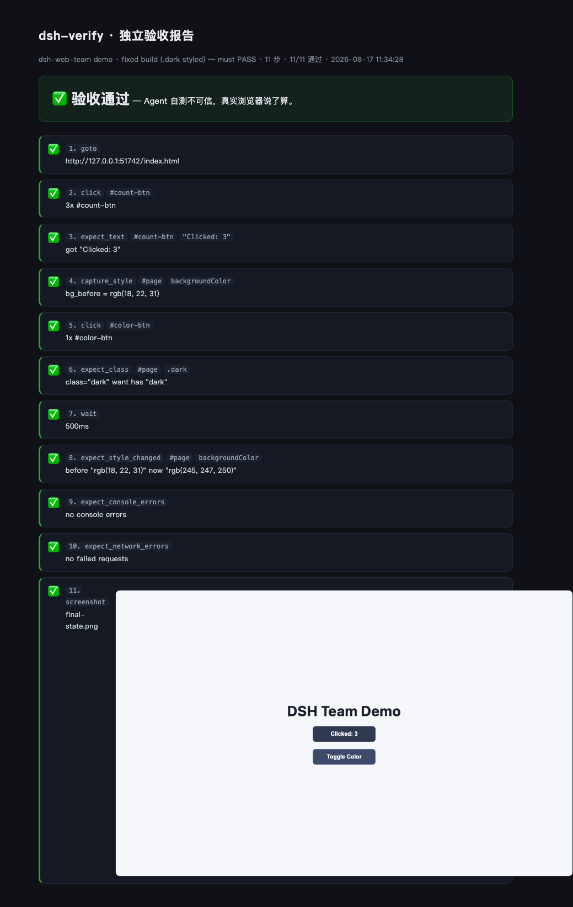

The quality gate for agent-built web apps.
One command: a real browser clicks, types, and returns PASS/FAIL with receipts.

$ npx dsh-verify --spec demo/fixed.json dsh-verify: PASS (6/6) — real Chromium · 2.1s · report → report.html
An AI agent said "all requirements met." The dark-mode toggle did nothing — one CSS rule was never written.
Every agent self-test passed, because nothing was on the page for the agents to run. No one opened a real browser.
Same page, same JS. One missing CSS rule. The agent's self-review passed; a real browser caught it.

Works with any agent — DeepSeek Harness, Claude Code, Cursor, Copilot, Codex — and any CI.
Write what a human would check in a browser; run npx dsh-verify --spec spec.json. Verdict + screenshots in seconds.
Connect the MCP server to Claude Code, Cursor or Copilot — agents can self-test against a real browser before saying done.
One step in any workflow. Installs dsh-verify and Chromium in isolation; your project stays untouched.
Every run produces a self-contained HTML report with per-step results, screenshots and visual diffs.

If Witness catches something for you — a star is how this project stays alive.
⭐ Star dsh-verify on GitHub See the Agent Arena →